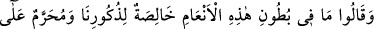
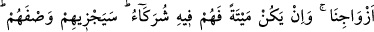
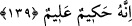
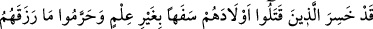
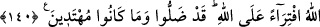

139. Dediler ki: “Şu hayvanların karınlarında olanlar yalnız erkeklerimize aittir,
kadınlarımıza ise haram kılınmıştır. Şayet (yavru) ölü doğarsa, o zaman (kadın
erkek) hepsi onda ortaktır.” Allah bu değerlendirmelerinin cezasını verecektir.
Şüphesiz ki O hikmet sahibidir, hakkıyla bilendir.
Müşrikler “dediler ki: “Bu hayvanların karınlarında olanlar, yalnız erkeklerimize
aittir, kadınlarımıza haramdır.” Bununla kulağı yarılıp işaretlenmiş “bahîra”, putlara
adanan “sâibe” hayvanların karınlarında olan yavruları kastediyorlardı. Yani bunlar
sadece erkeklere helâldir, kadınlara değil. Müşriklerin bu hükmü, yavrunun sağ doğması
halinde geçerli idi. “Eğer hayvanın karnındaki yavru ölü doğarsa, o zaman hepsi
kadınlar ve erkekler onda ortaktır.” Yani ondan kadınlar da, erkekler de yerlerdi.
“Allah onlara,” helal ve haram kılma konusundaki “bu” yalan “isnadlarının
cezasını verecektir.”
“Çünkü O, hüküm ve hikmet sahibidir, çok iyi bilendir.” Bu cümle, onlara vadedilen
cezanın sebebini açıklamaktadır. Çünkü, hüküm ve hikmet sahibi olan, onlardan sâdır
olan amelleri çok iyi bilen Allah, onları asla cezasız bırakacak değildir. Hikmetinin
gereği budur.
140. Bilgisizlikleri yüzünden beyinsizce çocuklarını öldürenler ve Allah’ın
kendilerine verdiği rızkı, Allah’a iftira ederek (kadınlara) haram kılanlar,
muhakkak ki ziyana uğramışlardır. Onlar gerçekten sapmışlardır ve doğru yolu
bulacak da değillerdir.
“Bilgisizlik” yani, basit akıllılıkları ve hem kendilerini hem de çocuklarının rızkını
verenin Allah olduğunu bilmemeleri “yüzünden beyinsizce çocuklarını öldürenler”
Bunlar, Rebia, Mudar ve benzeri Arap kabileleridir. Onlar fakirlik korkusu ile ya da
esir edilmesinler diye kız çocuklarını diri diri toprağa gömüyorlardı. Yani onlar hem
dinlerini, hem de dünyalarını mahvetmişlerdir.
“Ve Allah’ın kendilerine verdiği rızkı,” kulağı yarılıp işaretlenmiş hayvanları ve
benzerlerini “Allah’a iftira ederek” kendi nefislerine “haram kılanlar muhakkak ki
ziyana uğradılar,” Onlar: “Bu hayvanların haram kılınmasını bize Allah emretti.”
diyerek Allah’a iftira ettiler. Böylelikle doğru yoldan “saptılar, yola gelici de